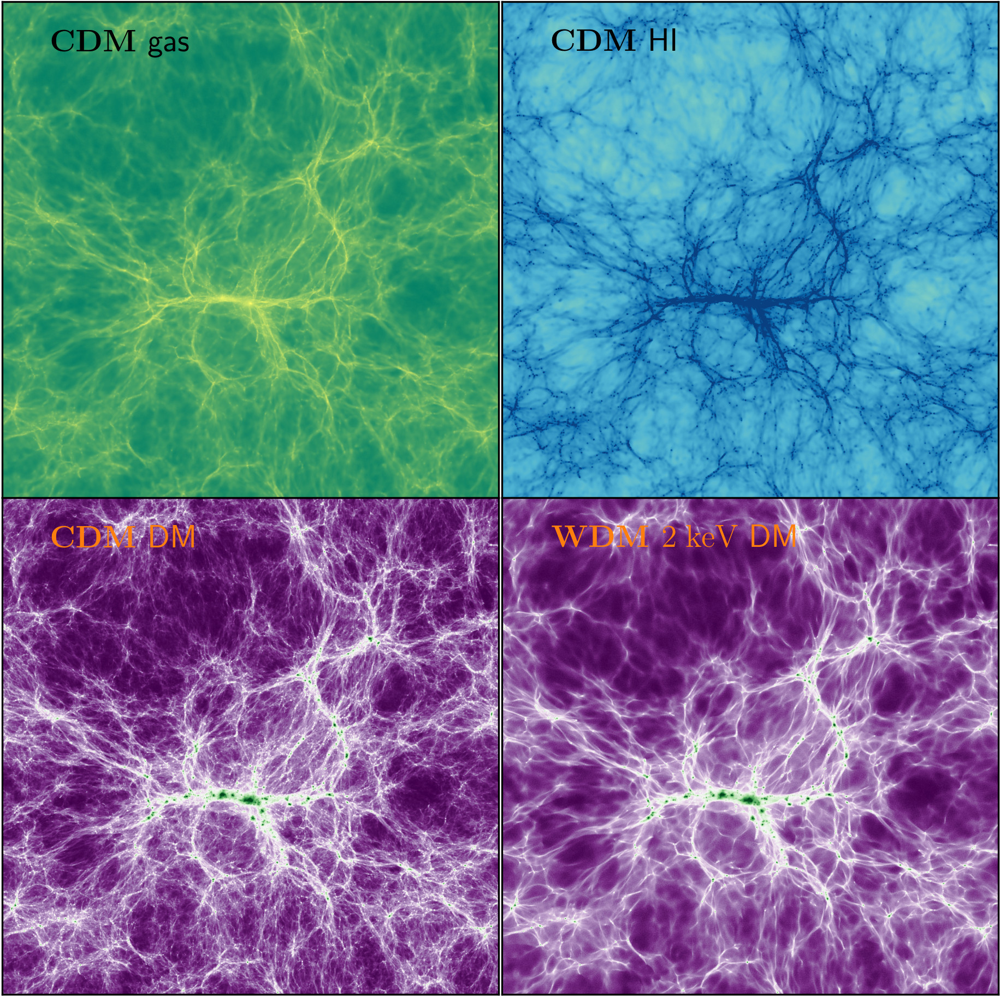
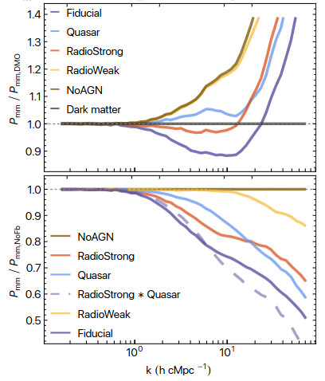
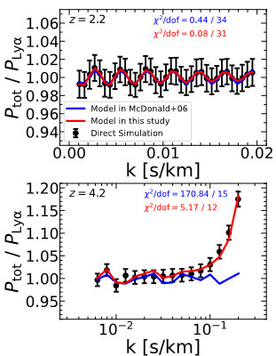

The Sherwood-Relics simulations (Puchwein et al. 2023) are a cornerstone of modern IGM research. These high-resolution hydrodynamical simulations provide the large-volume virtual laboratories needed to interpret Lyman-α forest data, incorporating patchy reionization and complex thermal histories.
Explore Data Products
Source: Puchwein et al. 2023 (Fig 1)To accurately model the forest, we must account for the impact of galaxies. Through the FABLE and xFABLE suites, we explore how stellar and AGN feedback affect the intergalactic gas, ensuring that baryonic "noise" does not bias our fundamental physics results.

Source: Martin-Alvarez et al. 2023Simulations are the primary tool for modeling complex systematics, such as Si-III cross-correlations (Ma et al. 2025) and refined absorber distributions. By bridging the gap between raw data and theoretical models, these computational tools are the engine of my discovery process.

Source: Ma et al. 2025